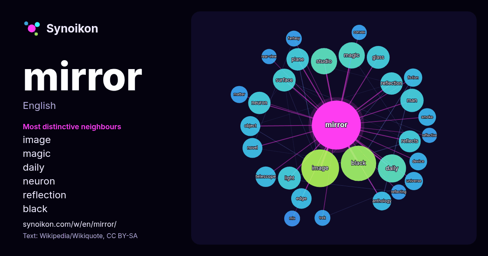

English · word of the day list
mirror
The words found around it in 1784 instances from Wikipedia, Wikiquote, Hacker News.

Most distinctive neighbours
- image 41×
- magic 28×
- daily 25×
- neuron 24×
- reflection 23×
- black 22×
- plane 21×
- reflects 20×
- telescope 19×
- glass 19×
- anthology 16×
- surface 15×
- smoke 15×
- edge 15×
- studio 14×
- universe 14×
- object 13×
- fiction 13×
- trek 12×
- rear-view 12×
× = how many times more often than in general Wikipedia text.
Most frequent neighbours
- image 68
- black 60
- series 42
- album 40
- daily 38
- magic 33
- studio 33
- song 28
- man 26
- glass 25
- light 25
- surface 25
- american 24
- lake 24
- neuron 24
- plane 24
- reflection 24
- episode 23
- reflects 23
- film 21
In context
- A mirror, also known as a looking glass, is an object that reflects an image. Light that bounces off a mirror forms an image of whatever is in front of Wikipedia snippets · Mirror
- mirrors or MIRROR may also refer to: Reflection (mathematics), creating the mirror image of a shape across a point, line or plane The "silver mirror" Wikipedia snippets · Mirror (disambiguation)
- Mirror Mirror is a 2012 American fantasy comedy film based on the fairy tale "Snow White", collected by the Brothers Grimm, directed by Tarsem Singh, Wikipedia snippets · Mirror Mirror (film)
- Mirror Mirror may refer to: Mirror, Mirror (1979 film), an American made-for-television drama film Mirror, Mirror (1990 film), a 1990 horror film Mirror Wikipedia snippets · Mirror Mirror
- Black Mirror is a British anthology television series created by Charlie Brooker. Most episodes are speculative fiction, set in near-future dystopias containing Wikipedia snippets · Black Mirror
- The Mirror may refer to: The Mirror, a book by T. B. Joshua The Mirror, a novelette by Nancy Farmer "The Mirror", a short story by Eiko Kadono "The Mirror" Wikipedia snippets · The Mirror
- Mirror in the Mirror: A Labyrinth is a collection of short stories by Michael Ende originally published in German 1984 with the title Der Spiegel im Spiegel Wikipedia snippets · Mirror in the Mirror
- Mirror sites or mirrors are replicas of other websites. The concept of mirroring applies to network services accessible through any protocol, such as HTTP Wikipedia snippets · Mirror site
More words
- art
- autumn
- bell
- bread
- bridge
- cat
- city
- climate
- clock
- death
- desert
- dog
- family
- food
- forest
- garden
- god
- gold
- health
- heart
- history
- honey
- horse
- island
- language
- life
- map
- money
- mother
- mountain
- nature
- power
- rain
- road
- salt
- science
- shadow
- silence
- song
- star
- storm
- summer
- tea
- time
- train
- truth
- water
- winter
- work
Precomputed on 2026-10-09 with default settings (±5 words, medium corpus). The interactive map can refresh it with live data.